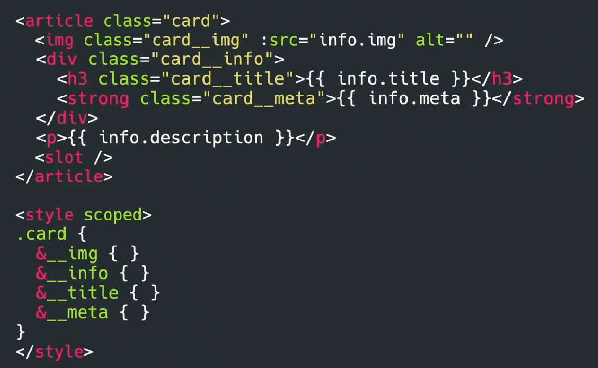
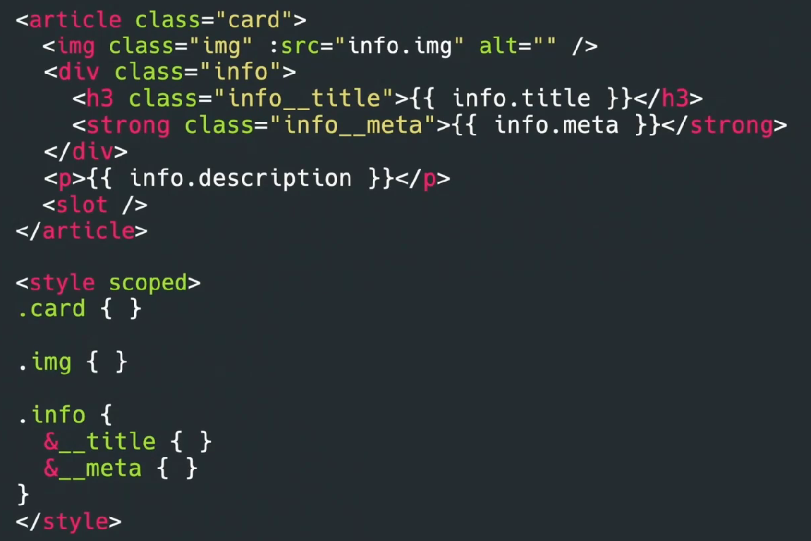

Uno de los mayores desafíos en la programación es nombrar correctamente las cosas, y esto es especialmente cierto en el caso de nuestras clases en CSS.
El mayor problema en CSS surge de su scope global: si usamos el mismo nombre para dos clases, pueden surgir conflictos que afectan la presentación de nuestra aplicación.
Con la llegada de aplicaciones JavaScript modernas, como las Single Page Applications (SPA), que trabajan con componentes, parece que hemos resuelto mágicamente todos los problemas del CSS gracias al uso de estilos encapsulados (scoped). Los frameworks y librerías hacen esto agregando prefijos a las clases o traduciendo los nombres para evitar colisiones, o utilizando técnicas como el shadow DOM, que aísla completamente los estilos. Otros frameworks agregan parámetros únicos a cada elemento para asegurarse de que una clase solo afecte a ese elemento específico. Esto puede dar la impresión de que ya no necesitamos preocuparnos por los nombres de las clases y que podemos estilizar directamente los elementos sin problema.
Pero ¿es realmente así? No del todo. Aunque estos enfoques resuelven algunos problemas del CSS tradicional, todavía enfrentamos desafíos de nomenclatura en los componentes JavaScript. Si bien el problema puede no ser siempre el nombre de las clases en sí, la necesidad de nombrar adecuadamente persiste, ya sea en las propiedades de estilo, los temas, las variantes, o cualquier otro aspecto del diseño de los componentes.
En resumen, aunque las técnicas modernas han mitigado algunos problemas, la importancia de una buena nomenclatura sigue siendo clave para mantener un código claro y manejable.
Nomenclatura BEM en componentes JavaScript
Cuando trabajamos dentro de un componente JavaScript, como en Vue, podríamos pensar que aplicar BEM es innecesariamente largo. Después de todo, ya estamos en el contexto de un componente card, ¿realmente necesitamos repetir ese nombre en todos los elementos? Es cierto que, en estos casos, puede parecer redundante. Entonces, ¿deberíamos olvidarnos de BEM al trabajar en componentes JavaScript? No necesariamente. BEM todavía puede ser útil, aunque podemos ajustar su uso para evitar bloques demasiado grandes.

Por ejemplo, en lugar de tener un solo bloque card con todos sus elementos, podríamos dividirlo en bloques más pequeños: card como un bloque, image como otro, y info como otro. En componentes muy pequeños, BEM puede parecer excesivo, pero se vuelve valioso cuando necesitamos aplicar modificadores o cuando el componente crece en complejidad, permitiéndonos mantener una estructura clara y organizada.

Adoptar una convención de nomenclatura, como BEM, no es solo para mantener el código ordenado y evitar colisiones de clases; es crucial para el trabajo en equipo. Al tener una forma estandarizada de trabajar, cualquier miembro del equipo puede entender rápidamente la estructura y los estilos de un componente. Sin esta uniformidad, el trabajo se vuelve más desorganizado y difícil de manejar.
Además, al usar BEM en un entorno con estilos encapsulados (scoped), tenemos la ventaja de que las clases no necesitan ser tan largas, sino que pueden ser más cortas y fáciles de leer. Esto también nos ahorra la necesidad de prefijar las clases según su categoría (como -a para átomos o -m para moléculas). Los componentes ya están organizados en sus respectivas carpetas, lo que resulta en clases más legibles y manejables.
Aunque este ejemplo se basa en un componente Vue, el mismo principio se aplica si trabajamos en Angular, React, o cualquier otro framework basado en componentes. Si usamos CSS con clases, BEM sigue siendo una convención útil y aplicable en todos estos contextos.
Nomenclatura sin clases "Tailwind"
Incluso si optamos por soluciones como Tailwind, en el que nos libramos de tener que pensar en nombres de clases, seguiremos teniendo la necesidad de pensar en nomenclatura. Por ejemplo, si queremos cambiar el aspecto del componente card, pasando una prop theme, tendremos que pensar el nombre de los themes, y posiblemente crear un método para aplicar las clases de Tailwind. Tendremos que preocuparnos de que estos nombres comuniquen la intencionalidad del método, para que sea claro como y por qué se aplican.
También puede ser interesante separar visualmente las clases de Tailwind según su responsabilidad, para que sea más fácil de leer y entender el aspecto que tiene ese elemento:
<input
class="block w-full mt-1 px-4 py-3 | border border-gray-400 rounded shadow-sm
| transition ease-in-out duration-150 | focus:ring-2 focus:ring-blue-600"
type="text"
/>